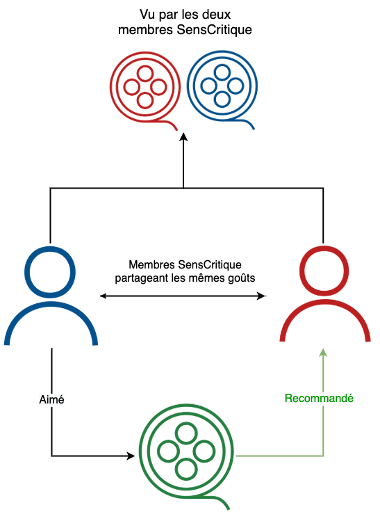
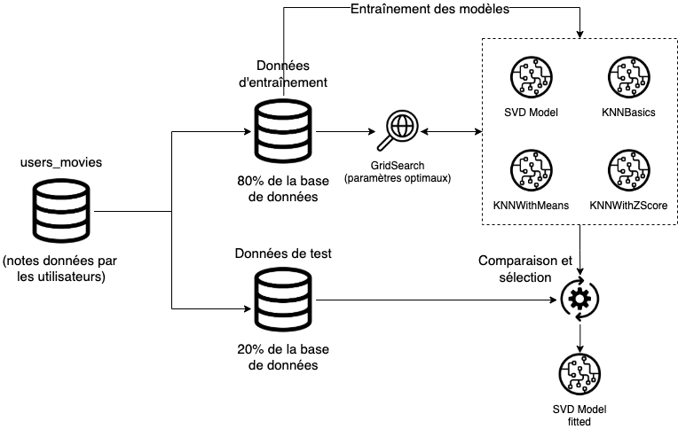

SensCritique - Système de recommandation
Executive summary
Introduction
SensCritique est un site web français incontournable pour les cinéphiles, mélomanes et littéraires. SensCritique regorge de films, de critiques, de notes, de classements orientant les utilisateurs dans la constellation infinie des films du monde. J’y ai découvert grâce à ce site pléthore de réalisateurs (Denis Villeneuve, James Gray, Michael Cimino …), de films et finalement, de grands moments. Il manque cependant un élément à cette plateforme : un système de recommandation. En effet, j’ai parcouru durant des heures le site à la recherche de nouveautés, ajouté des films à ma liste d’envie. Mais cela est chronophage et un système de recommandation pourrait facilement pallier ce problème épineux en valorisant la pluralité des profils de la communauté SensCritique. C’est ainsi l’objet de cet article : mon système de recommandation pour SensCritique La donnée
Le système de recommendation a été créé à partir de trois sources de données:
- Utilisateurs
- Films
- Notes données aux films par les utilisateurs
|
|
|
|
|---|---|---|
| Ces données décrivent brièvement les membres de la communauté SensCritique. | Ces données décrivent les films repertoriés sur SensCritique. Cette donnée est utile lors de la restitution notamment pour filter les recommendations par genre. | Ces données sont les données d'entraînement pour les modèles. Elles permettent d'appréhender les groupes similaires et d'anticiper les envies des membres en se basant sur la similarité de leur goût. |
Ces données ont été scrapées sur le site SensCritique afin d'entraîner les modèles et de créer le process complet. Ces données sont donc partielles et les modèles décrits dans la section suivante ne seront optimaux qu'en les entraînant sur la base de données complète de SensCritique.
Modèles et résultats
Plusieurs modèles ont été testés afin de déterminer le plus performant. Les modèles utilisés proviennent de la librairie python Surprise. Modèles:Processus complet
 Le processus décrit si dessous est appliquée sur la base de données scrapée. Cette base de données comprend:- 1842 utilisateurs
- 31489 items (notes)
- 1805 utilisateurs
- 28425 items (notes)
|
|
|
|
|
|---|---|---|---|
| SVD | 614.46 s. | 1.491 | 1.152 |
| KNNBasic | 162.78 s. | 1.599 | 1.225 |
| KNNWithMeans | 140.01 s. | 1.548 | 1.19 |
| KNNWithZScore | 140.93 s. | 1.545 | 1.182 |
- RMSE: 2.141
- MAE: 1.124
La mise en production
La mise en production du système de recommendation a été faite via docker. Une image docker a été créée et le modèle entraîné lors de sa construction. Ainsi, une fois construite, les recommendations sont accessibles en local.
L'image docker est accessible ici: Docker image
Il suffit ensuite de lancer la commande: docker run -it -d -p 8501:8501
lgirondomeu/docker-sens-critique-recommended-system streamlit run rssenscritique/main.py
et d'accéder au système via:
http://localhost:8501/
Le front a été developpé avec le package streamlit.
Content & contacts
louis@giron-dom.eu
Contact
All contact information here